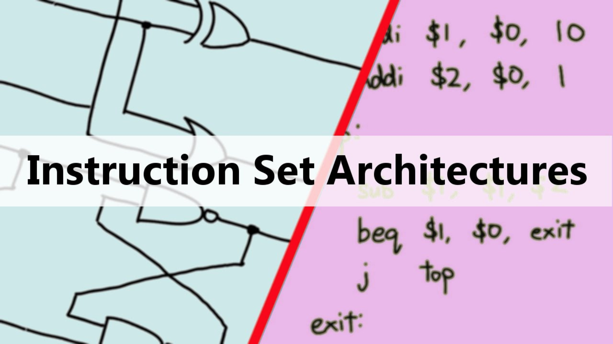
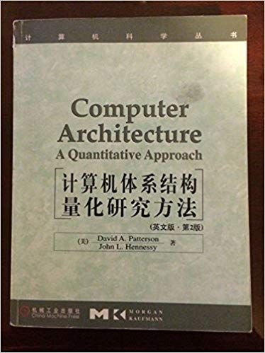
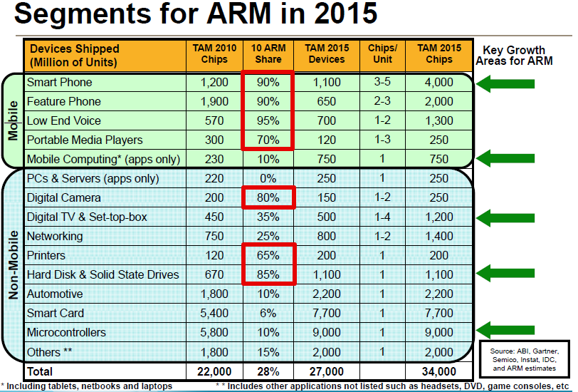
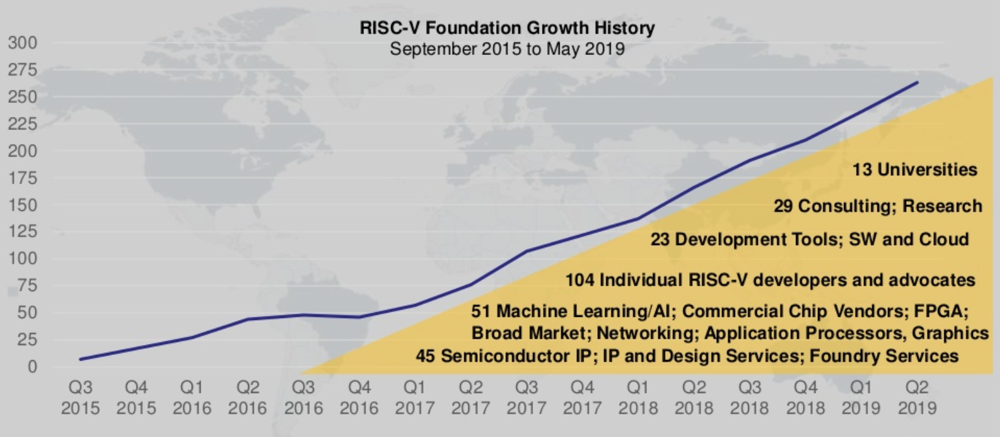
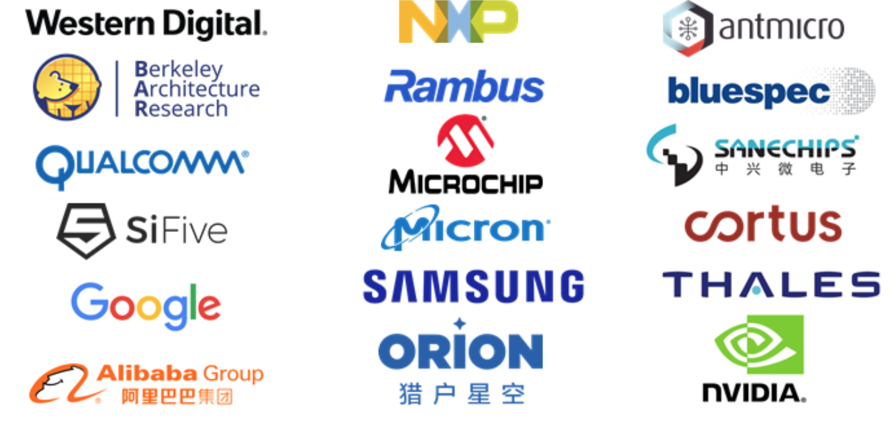
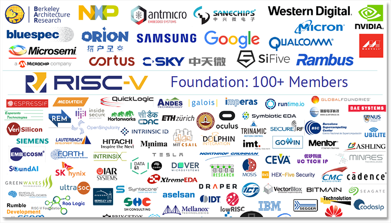
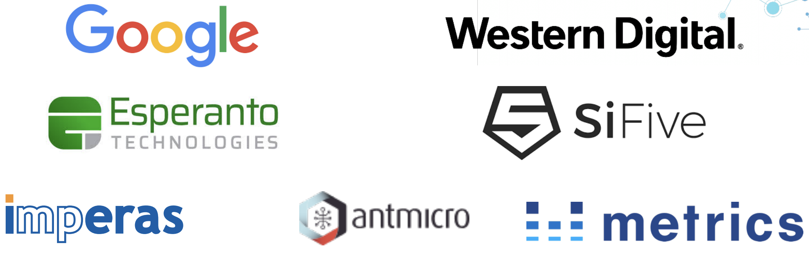
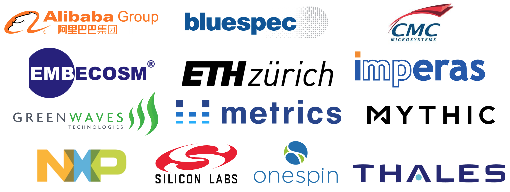

[RISC-V Architecture Training] Introduction of RISC-V Open ISA
What is ISA?
Contract between software and hardware.

What is RISC?
Reduced instruction set computer
- Small set of simple/general instructions + load/store architecture
- Optimize hardware to be simple and faster
- Software-centric design: rely on compiler + software
| CISC | RISC |
|---|---|
| Emphasis on hardware | Emphasis on software |
| Includes multi-clock complex instructions | Single-clock, reduced instruction only |
| Memory-to-memory: “LOAD” and “STORE” incorporated in instructions | Register to register: “LOAD” and “STORE” are independent instructions |
| Small code sizes, high cycles per second | Low cycles per second, large code sizes |
| Transistors used for storing complex instructions | Spends more transistors on memory registers |
- E.g. Alpha (DEC), SPARC (SUN), MIPS (now Wave), Power (IBM), ARM
What is RISC?
- John Hennessy & David Patterson
- Authers of computer architecture bible “Computer Architecture: A Quantitative Approach” (for graduates)
- Also “Computer Organization and Design” (for undergraduates)
- Turing Award 2017

Most popular RISC ISA: ARM

background-image: url(../image/money.jpg)
But also very expensive!
ARM’s business model: IP licensing
ARM’s IP eco-system: CPU-centric custom-SoC IP
CPU (Application/Real-time/eMbedded), GPU, DSP, fabric, cache, ISP, debug, etc.
License fee + royalty
| IP | Royalty (% of chip cost) |
|---|---|
| ARM7/9/11 | 1.0% - 1.5% |
| ARM Cortex A-series | 1.5% - 2.0% |
| ARMv8 Based Cortex A-series | 2.0% and above |
| Mali GPU | 0.75% - 1.25% adder |
| Physical IP Package (POP) | 0.5% adder |
Architecture license
- Do you want to modify the RTL code?
- Custom instruction; differentiation
- This license that allows you to implement your own ARM core. 10+ Millions?
RISC-V / open source
Free and open !
- No fee to use or modify
- Commercial usage
- Don’t need to open your modification or implementation
Open source hardware
RISC-V / fundation
http://www.riscv.org

RISC-V / fundation

RISC-V / ISA
What is defined and not defined in RISC-V ISA
Defined
- Instruction set(s)
- Architecture states
- GPR (general purpose register) + PC
- CSR (control status register)
- ABI (application binary interface)
- GPR convention
- Function/system call convention
- Exception and interrupt
- Debug architecture
Not-defined
- Micro-architecture related details
- Implementation dependent details
- Even micro-architecture and implementation related instructions
- Maybe in the future?
History / UC Berkeley
2010 at UC Berkeley BAR
UC Berkeley Architecture Research in Berkeley EECS department
- Birth place of RISC (reduced instruction set computer)
- Start as a teaching project
- https://bar.eecs.berkeley.edu
Two persons: David Patterson & Krste Asanovic
- David Patterson
- Turing Award 2017
- Contribution: RISC, RAID
- Vice Chair of the Board of the RISC-V Foundation
- Krste Asanovic
- Chairman of the Board of the RISC-V Foundation
- IEEE Fellow & ACM Fellow
History
One company: SiFive at 2015
- Krste Asanovic (Prof. in UCB, Co-Founder & Chief Architect)
- Yunsup Lee (Former student in UCB BAR, Co-Founder & Chief Technology Officer)
- Andrew Waterman (Former student in UCB BAR, Co-Founder & Chief Engineer)
Nowadays / momentum worldwide
Support from large companies

Obviously, that’s the reason we are here.
Ecosystem
- Different from traditional architecture that’s owned/maintained by one company.
- It’s more like Linux, owned by a fundation, maintained by a community.
Commitee and Work groups
- Technical committee
- Base ISA
- Different extensions: BJPV…
- Fromal/debug/fast interrupt/memory model/…
- Program committee (workshops)
- Chennai / Shanghai
- Marketing committee
Technical committee is open to everyone. Most of them have weekly meeting.
Ecosystem
Workshop & summit
Up-coming/recent events:
- RISC-V Summit
- 2019/12/9 in San Jose, CA, US
- RISC-V China Roadshow
- 2019/06/06-16 in Shenzhen, Chengdu, Shanghai, Hangzhou, Beijing
- Alibaba, Andes, Codasip, GreenWaves, SiFive, etc…
Ecosystem / software
Compiler
- GNU toolchain (more developed)
- GCC, GDB, OpenOCD
- LLVM (more promising)
- Code optimization
- Auto vecterization
OS
- Linux: Fedora, Debian
- RTOS: FreeRTOS, Zephyr OS
Simulator
- SPIKE: golden ISA simulator
- Only for RISC-V
- QEMU: full-system simulator
- Used for software stack development
Debugger
- GDB + OpenOCD
- Lauterbach
- Segger
- UltraSoC
Ecosystem / hardware
Open source hardware
-
RocketChip
- The very first one from UCB
- Not only a CPU but an SoC generator
- Based on Chisel
- Now maintained by CHIPS Alliance
-
LowRISC
- UK based company
- Early adopter
-
BOOMv2
- Student project in UCB (out-of-order RISC-V)
- Now maintained by Esperanto
-
PULP (https://pulp-platform.org/)
- From ETH Zurich University (Switzerland)
- Also a family of cores and full SoC system
- Based on SystemVerilog
-
Swerv
- WesternDigital in-house RISC-V CPU
Ecosystem / hardware
Commercial
- SiFive
- A family of CPUs: 2/3/5/7 series
- Andes
- A Taiwan CPU company
- Codasip
- Start from Czech Republic
- Esperanto
- High-performance cores for AI application
- UltraSoC
- Debug solution provider
Ecosystem / hardware
Others
- Microsoft
- Rambus
- …
Ecosystem / CHIPS alliance
A project hosted by “the Linux Foundation”
Difference vs RISC-V Foundation
- RISC-V is for ISA, not implementation
- CHIPS alliance hosts implementation around RISC-V

.footnote[Note: all bay area companies]
https://github.com/chipsalliance
Open source design
- Chisel + FIRRTL
- Agile design language and middleware
- FuseSoC
- Package (library) manager for hardware design
Open source toolchain
- Verilator
- Translate SV RTL to C++, then compile and simulate
- Open source choice besides VCS(S)/Questa(M)/Xcelium(C)
- Cocotb
- Write testbench in Python
- https://github.com/chipsalliance/tools-cocotb-verilator-build
Open source IPs
- Rocket Chip
- RISC-V CPU generator from Berkeley/SiFive; written in Chisel
- SweRV
- RISC-V CPU from Western Digital; written in SV
- OmniXtend
- Network based on TileLink; written in SV?
Ecosystem / OpenHW group
Another RISC-V oriented open hardware group
- Similar to CHIPS alliance

Open source RISC-V cores
- PULP series CPU cores from ETH Zurich
- Based on SystemVerilog
Comercial SoC based on PULP cores
- GreenWaves: multi-core RISC-V SoC for IoT applications
- NXP: BLE controller on RISC-V
Commercial toolchain
- Metrics: cloud-based simulator
- Imperas: ISS (instruction set simulator)
- OneSpin: formal verification
Ecosystem / RISC-V in China
中国RISC-V产业联盟
CRVIC (China RISC-V Industry Consortium)
- 上海市 + 企业
- Verisilicon
中国开放指令生态(RISC-V)联盟
CRVA (China RISC-V Alliance)
- 中科院计算所
- 倪光南
Resources
RISC-V Github (https://github.com/riscv)
- Specification
- Toolchain
- Linux
Discussion groups on Google Groups
Summary
Open ISA
- Free to use/modify
- Open source (like Linux)
- Owned by RISC-V foundation
- Maintained by community
- Tech committees
History & momentum
- Start from UCB as a student project
- Now widely supported by lots of companies worldwide
Ecosystem
- Software
- Open source
- Hardware
- Both open source and commercial
- RISC-V in China